Меню
Содержание
Зависимости настроек
Важно
На отображение влияют настройки:
Интерфейс основного меню (Журнал Конфигурация) - глобальная настройка, для всего приложения и всех пользователей.
Приоритеты групп (Настройки меню > Глобальная настройка) - глобальная настройка для всех конфигураций и пользователей.
Группы или пользователи (Настройки меню > Текущая конфигурация) - принадлежность одной конфигурации меню.
Доступность раздела (Настройки меню > Настройки конфигурации > Элементы меню > Раздел) - принадлежность одного раздела пользователям.
Настройка меню под проект
Основной подход к кастомизации меню под проект - это создание нового меню. Дефолтные конфигурации имеют наименьший приоритет и не применяются если есть другие подходящие варианты
Журнал Конфигурация
В журнале для настройки Интерфейс основного меню (default-ui-main-menu) устанавливается какой вариант (версия) меню будет использоваться в системе.
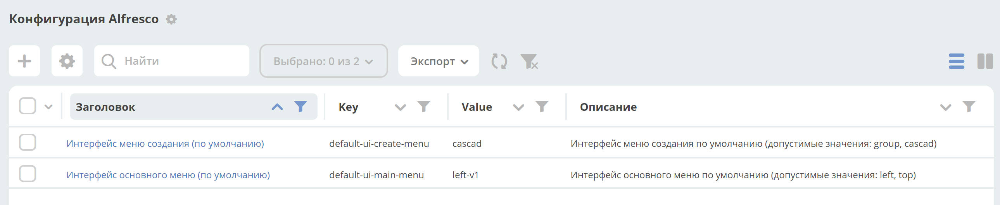 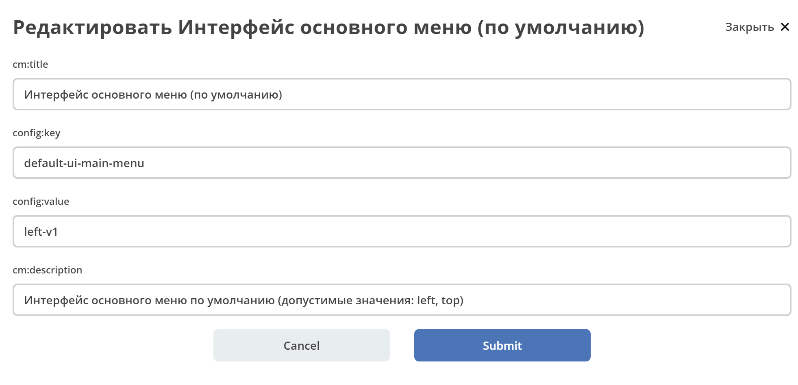где left-v1 - первая версия конфигурации левого меню (поддерживается просмотр и редактирование).
Журнал Меню
В журнале перечислены все конфигурации разных версий.
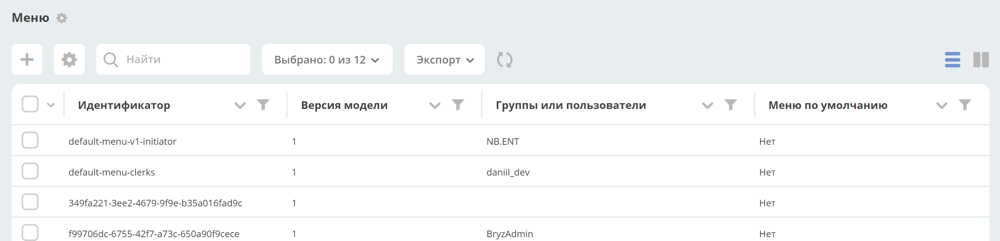Версия конфигурации меню
В конфигурации меню есть поле version, которое определяет версию модели. Актуальный список версий:
0 - устаревший xml формат конфигурации
1 - актуальный json формат конфигурации
Доступность действий в журнале
Действия |
default |
user |
|---|---|---|
Редактировать |
|
|
Удалить |
|
|
Копировать |
|
|
Просмотреть |
|
|
Скачать |
|
|
Настройка меню
Способы открытия
Через шапку сайта иконка «Шестеренка» > Настроить меню.
Примечание
При использовании данного способа в окно настроек загружается конфигурация меню используемая на данный момент в интерфейсе. То есть в основном для настройки административного меню.
Через журнал Конфигурация UI - Меню действие Редактировать конфигурацию
Окно настроек
Настройки содержат четыре вкладки:
Настройки выбранной конфигурации - описывает состояние отображаемого меню (элементы меню, версия, принадлежность и т.д.).
Меню «Создать» - для редактирования пунктов меню, доступных по нажатию на кнопку Создать
Пользовательское меню - для редактирования пунктов меню, доступных по нажатию на имя пользователя в правом верхнем углу.
Глобальные настройки - то, что влияет на всю систему и всех пользователей (приоритеты).
Обзор режима редактирования
Вкладка «Настройки выбранной конфигурации»:
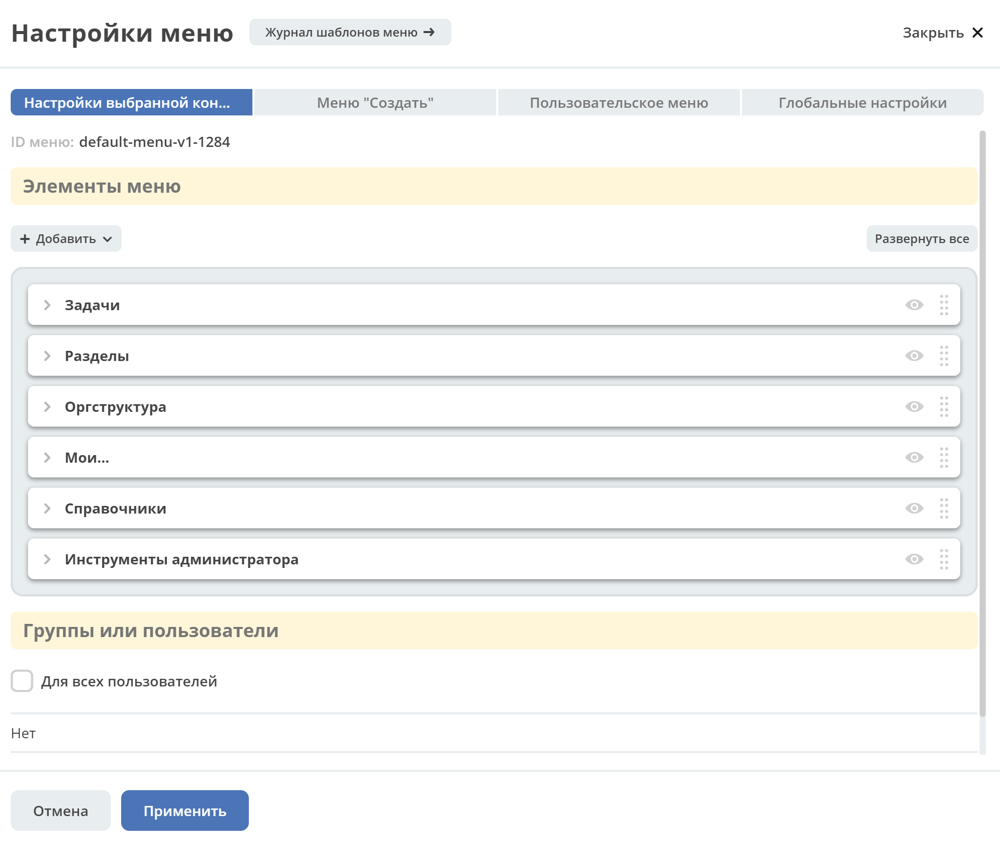Вкладка «Меню «Создать»:
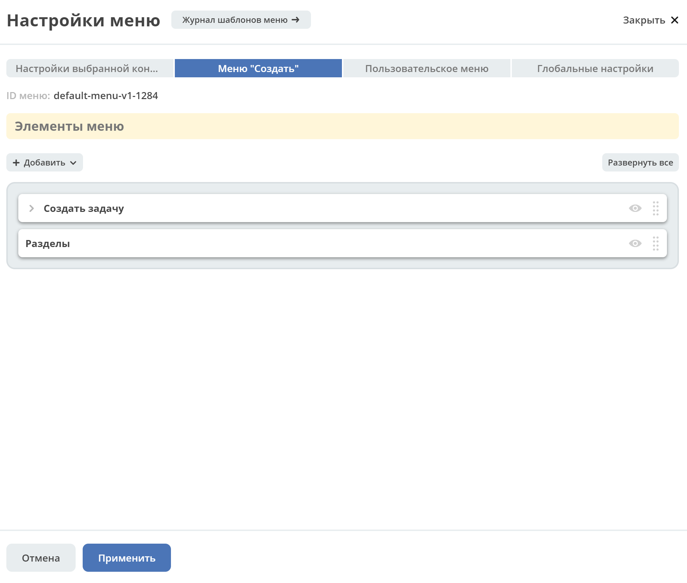Вкладка «Пользовательское меню»:
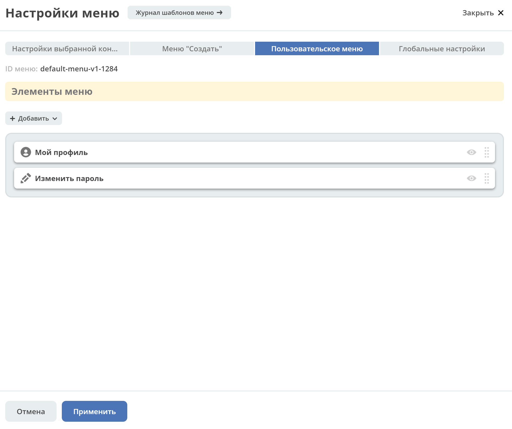Вкладка «Пользовательское меню»:
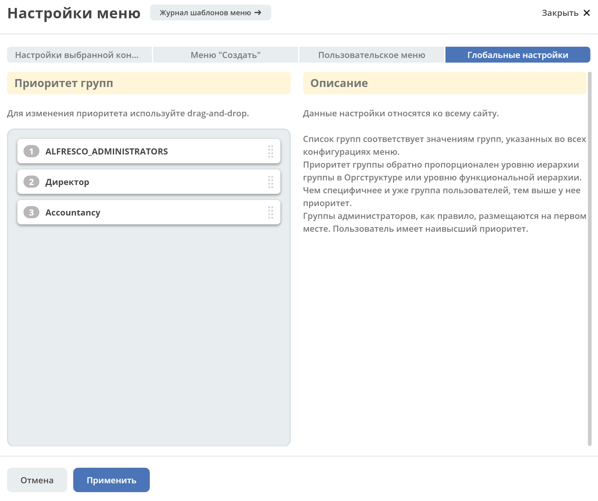Обзор режима просмотра
Действие доступно через журнал Меню.
То же самое окно что при редактирования, но без элементов изменяющих представление. Например, вкладка «Настройки выбранной конфигурации»:
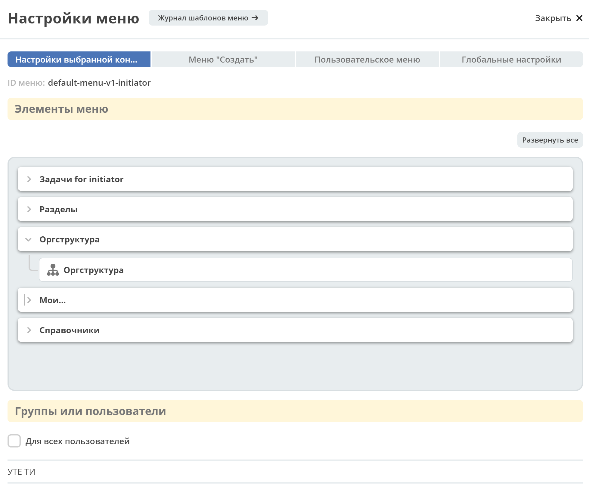Редактирование
Важно
Настройки на вкладке «Настройки выбранной конфигурации (Меню Левое)»» и «Меню Создать» хранятся вместе. То есть на меню Создать влияют те же правила что и на Левое меню.
А - создаются автоматически системой
Вкладка «Настройки выбранной конфигурации» (Меню Левое)
Секция «Элементы меню»
Возможные типы пунктов и их доступность на каждом уровне:
Тип/Уровень |
1 |
2 |
3 |
4 |
|---|---|---|---|---|
Раздел |
|
|
|
|
Разделяющий заголовок |
|
|||
Журнал |
|
|
|
|
Произвольный пункт меню |
|
|
||
Ссылка на создание кейса |
|
|
|
|
Запустить бизнес-процесс |
|
|
|
Если добавлен пункт Ссылка на создание кейса и в результате есть возможность создавать несколькими способами в левом отобразится раздел с вариантами создания.

Доступность дополнительных характеристик:
Тип |
1 |
2 |
3 |
|---|---|---|---|
Раздел |
Без названия |
Иконка |
|
Разделяющий заголовок |
|||
Журнал |
Счетчик, Иконка |
Счетчик |
|
Произвольный пункт меню |
Иконка |
||
Ссылка на создание кейса |
Иконка |
||
Запустить бизнес-процесс |
Иконка |
Подробнее о некоторых типах:
Раздел
Скрыть название - доступно только на головном уровне. В меню подпункты отображаются вне группы, но вместе.
Доступно для - возможность ограничить доступ к разделу пользователям, которым доступны остальные пункты меню.
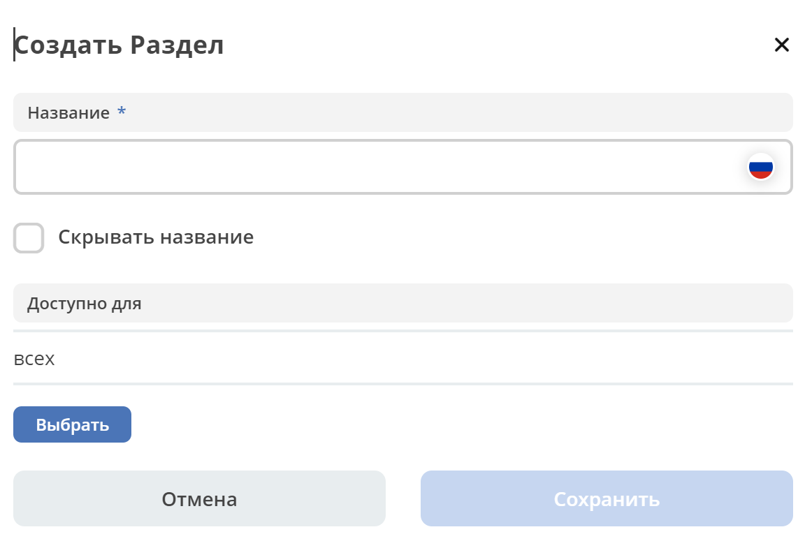Разделяющий заголовок
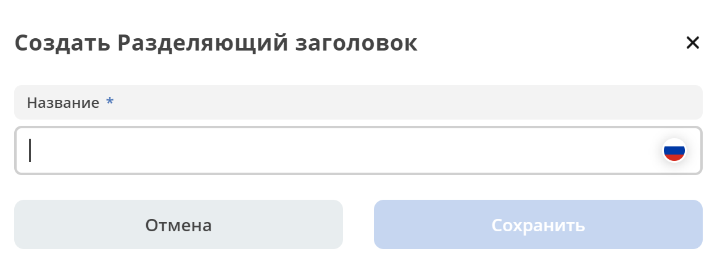Журнал, Ссылка на создание кейса, Запустить бизнес-процесс
Добавление пунктов осуществляется выбором элементов из журнала. Редактирование не доступно, только удаление. Необходимые сведения поступают из конфигурации элемента. Можно добавлять сразу несколько выбранных значений.
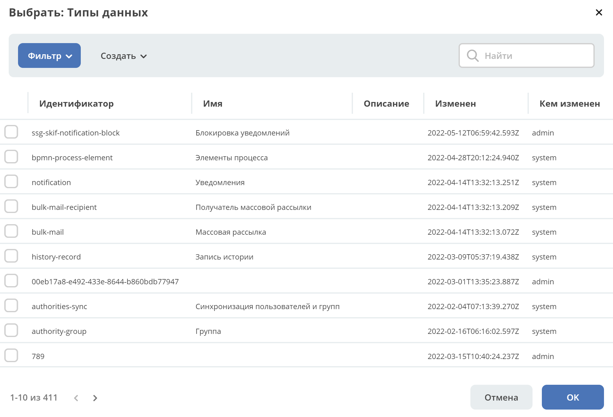Ссылка на создание кейса, Запустить бизнес-процесс - в настройке выбирается журнал, но в самом меню используются сами варианты создания записей в этом журнале. Варианты создания настраиваются в журнале Журналы > Редактировать нужный журнал > вкладка на форме Create Variants
Предупреждение
Для Ссылка на создание кейса если:
выбран журнал Файл уведомления, в меню отобразится пункт Загрузить шаблон уведомления;
выбран журнал Форма, в меню отобразится раздел Форма с пунктами Создать форму и Загрузить форму
Произвольный пункт меню
Ссылка - В зависимости от значения на выходе формируется соответствующий путь перехода. Под описанием поле выводится результат формируемой ссылки.
Примечание
Подробнее про Абсолютные и относительные ссылки.
Абсолютный URL - если указан полный путь. Ссылка будет открываться в новой вкладке браузера.
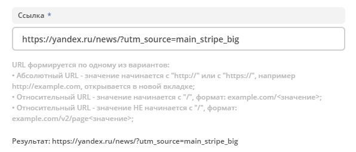Относительный URL. Варианты формирования:
Если значение начинается с “ / ” , то итоговая ссылка формируется как хост + значение.

Если значение не начинается с “ / ”, то итоговая ссылка формируется как текущая ссылка в адресной строке + значение.
Предупреждение
Может привести к не ожидаемому результату.
Секция «Группы и пользователи»
Выбор групп и пользователей, которым будет назначено редактируемое меню:
Пользователь имеет наивысший приоритет. Так же стоит учесть зависимости других настроек.
Если на пользователя/группу назначено несколько конфигураций, это может привести к неопределенному результату и появится не то меню, что ожидалось.
Установленные группы попадают в приоритет групп, по умолчанию в конец списка.
Вкладка «Меню «Создать»
Возможные типы пунктов и их доступность на каждом уровне:
Тип/Уровень |
1 |
2 |
3 |
4 |
|---|---|---|---|---|
Раздел |
|
|
|
|
Варианты создания из раздела |
|
|
|
|
Произвольный пункт меню |
|
|
|
|
Ссылка на создание кейса |
|
|
|
|
Запустить бизнес-процесс |
|
|
|
|
Доступность дополнительных характеристик:
Не доступны только Счетчик и Иконка
Подробнее о некоторых типах:
Повторяющиеся типы из первой вкладки аналогичны.
Варианты создания из раздела
Выборка составляется на основе конфигурации Левого меню, содержит все пункты с типом Раздел. Представлены плоским списком, включая дочерние.
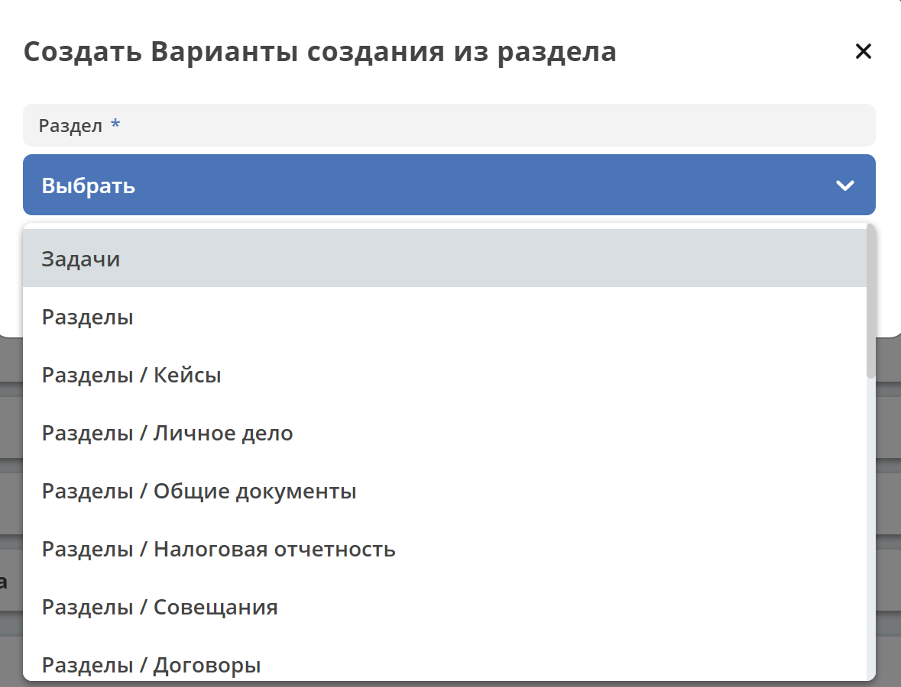После создания пункта в настройках отображается только имя раздела.
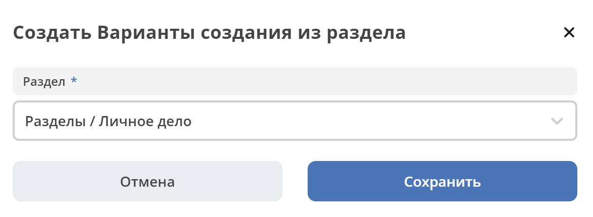В самом «Меню Создать» после применения настроек, пункт превращается в пункты - варианты создания (аналогичные типу Ссылка на создание кейса):

Примечание
Т.е. данный тип заменяет ручное добавление пунктов с типом Ссылка на создание кейса, если необходимы все варианты из раздела.
Вкладка «Пользовательское меню»
Если меню не настроено:
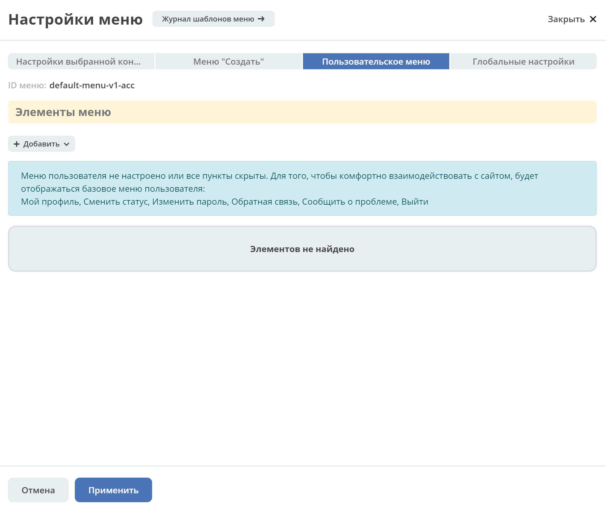Возможные типы пунктов:
Для настройки доступны следующие пункты:
Профиль пользователя
Сменить статус
Изменить пароль
Обратная связь
Сообщить о проблеме
Выйти
Произвольный пункт меню
Подробнее о некоторых типах:
Тип «Произвольный пункт меню» аналогичен первой вкладке.
Вкладка «Глобальные настройки»
Примечание
Данные настройки относятся ко всей системе.
Секция «Приоритеты групп»
Список групп соответствует значениям групп, указанных во всех конфигурациях меню.
Приоритет группы обратно пропорционален уровню иерархии группы в Оргструктуре или уровню функциональной иерархии. Чем специфичнее и уже группа пользователей, тем выше у нее приоритет.
Группы администраторов, как правило, размещаются на первом месте.
Пользователь имеет наивысший приоритет (пользователи не отображаются в приоритетах).
Как это работает
В конфигурации меню указываются группы или пользователи для которых настраивается меню. Приоритет групп - настройка глобальная, исходя из ее настройки и указанных участников, возвращается соответствующее для пользователя меню.

АП - авторизованный пользователь
АП - tam42 и он указан в одной из конфигураций. Указание пользователя - наивысший приоритет => возвращается конфигурация №10. Пользователь не должен указываться в нескольких.
АП состоит в группе администраторов (и не указан на прямую в конфигурации). Настраиваем конфигурацию с указанием этой группы. В настройке приоритетов эта группа на первом месте. Результат - слева отображается меню №3
АП - главный клерк, состоит в 2х группах: клерки и главные клерки. Есть две конфигурации №2 и №6. В приоритетах главные клерки на 2 месте, другие на 3. Результат - слева отображается меню №6. Для Не главных клерков №2.
Если для АП нет ни одного подходящего меню - загружается базовое (default)
Редактор иконок
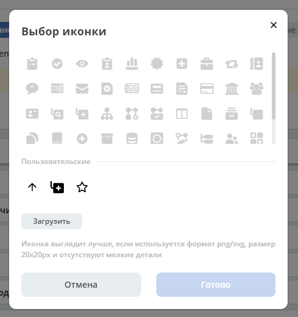На выбор пользователю предоставлен набор системных иконок. Если в наборе нет подходящей, есть возможность загрузить собственную, которая появится в блоке Пользовательские. Наилучший вариант формата иконки - svg.
Иконка по умолчанию:
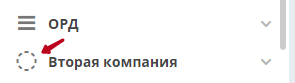Результат настроек
Меню Левое
|
||
Меню Создать
|
||
Пользовательское меню
|


{kind=link}
{kind=link}
{kind=link}
{kind=link}
{kind=link}
{kind=link}
{kind=link}
{kind=link}
{kind=link}
{kind=link}
{kind=link}
{kind=link}
{kind=link}
{kind=link}
{kind=link}
{kind=link}
{kind=link}
{kind=link}
{kind=link}
{kind=link}
{kind=link}
{kind=link}
{kind=link}
{kind=link}
Смежные настройки
Логотип > Темы интерфейса
Действия> Типы действий